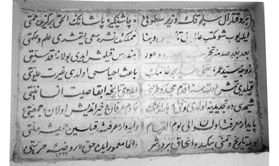
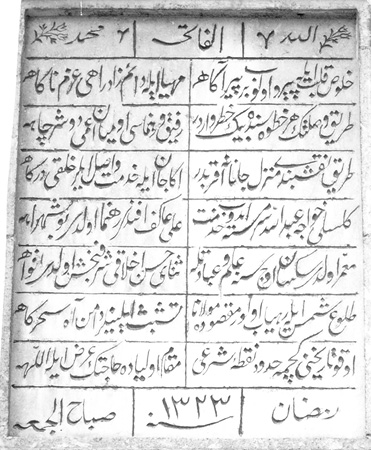
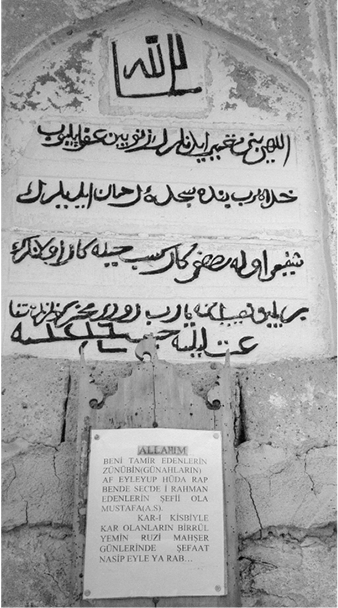
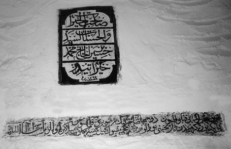

Kitâbelerdeki Barla

Bir vakitler Âl-i Selçuk’un vezir-i satveti Çaşnîgîr Paşa’nın elhak bir güzîde himmeti,
Eyleyüp şu mekteb-i âlîyi tesis ü binâ, memlekette neşre sa’yetmişti ilm u hikmeti.
Ba’de bu’din sadme-i tahrib-i a’sâr u dühur, münderis kılmış idi bu lâne-i kudsiyeti.
Zevce-i Seyyid Ömer, yani Hatice Hanım’ın bâis-i ihyası oldu gayret-i ulviyeti.
Kıldı yetmiş dört sene akdem müceddid tarhını eyledi tarihe ibkâ, sayt-ı insaniyeti.
Şimdi de tecdidine oldu muvaffak Barla’nın hâdim-i irfan ve hayır-endîş olan cemiyeti.
Pâyidâr-ı mârifet olsun ilâ yevmi’l-kıyâm, vâledâr-i marifet kılsın hemîşe milleti.
Böyle tarih ve temenni binde ancak bir düşer, dâimâ mâmur ede Hak ravza-i hürriyeti!
1229 (m. 1813)

Allah - el-Fâtiha - Muhammed (s.a.s)
Hulûs-u kalb ile peyrev olup bir pîr-i âgâha,
Müheyya eyle dâim zâd-ı râh-ı azm-i nâgâha.
Tarîk-i vuslatın her hatvesinde bin hatar vardır.
Refîk-i râhnümâsı olmayan a’mâ düşer çâha.
Tarîk-i Nakşbendî, menzil-i cânâna akreptir.
Ânâ cân ile hizmet, vâsıl eyler halkı dergâha.
Kilisli Hoca Abdullah sermest-i edip hizmet,
Ali Âkif Efendi râhnümâ oldu bu şehrâha.
Muammer oldu seksen üç sene ilm u ibâdetle,
Senâ-yı hüsn-ü ahlâkı şerefbahş oldu efvâha.
Tulû-u şems ile râhyâb olur maksûde Mevlânâ,
Teşebbüs eyleyenler dâmen-i âh-ı sehergâha.
Oku tarihini, geçme hudud-u nokta-i şer’î,
Makam-ı evliyada hâcetin arz eyle Allah’a!
Ramazan - 1323 (m. 1907) - Sabâhu’l Cum’a

Allah’ım!
Beni tâmir edenlerin zünûbîn (günahlarını) afv eyleyüp,
Hüdâ Rab bende-i secde-i Rahmân edenlerin şefîi olan Mustafa (s.a.s)!
Kâr-ı kisbiyle kâr olanların birrü’l-yemin, rûz-u mahşer günlerinde şefaat nasib eyle Yâ Rab!
Yokuşbaşı Mescidi Kitabesi

Sâhibü’l-hayrat ve’l-hasenât es-Seyyid Hüseyin bin
el-Hac Muhammed Hayratı’dır. 1293 (m. 1876-1877)
Elhamdülillâh!
Dû cihanda sahibinin arz-ı gerü kılmasun!
1220 (1804)’den tarihini bulalım.
Hacc-ı makbul kıl!
Müyesser gelüb, mesâkin olalım, mâşâallah!